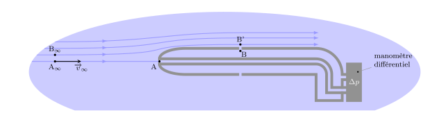

Relation fondamentale de la dynamique des fluides parfaits
Équation d’Euler
Supposons un fluide en écoulement dans un champ de forces extérieures que l’on sait
exprimer. On admettra que :
le fluide est en écoulement dans un référentiel galiléen
le fluide est parfait : les forces internes se résument aux forces de
pression
Appliquons le Principe fondamentale de la dynamique à une particule de fluide située en
\(M\) à l’instant \(t\) et de masse \(\mathrm{d}m = \rho(M,t)\mathrm{d}\tau\).
Appliquons la seconde loi de Newton :
$$
\quad \mathrm{d}m \frac{\mathrm{D}\overrightarrow{v}}{\mathrm{D}t} =
\mathrm{d}\overrightarrow{F}{}^\text{ext} + \mathrm{d}\overrightarrow{F}{}^\text{int}
$$
d’où l’équation d’Euler :
$$
\quad \boxed{
\rho(M,t) \left[ \frac{\partial \overrightarrow{v}}{\partial t}
+ \left( \overrightarrow{v} \cdot \overrightarrow{\nabla} \right) \overrightarrow{v}
\right] =
-\overrightarrow{\nabla}p(M,t) + \overrightarrow{f_V}{}^{ext} }
$$
Résolution de l’équation d’Euler
L’équation d’Euler est une équation aux dérivées partielles du premier ordre. On remarque
qu’elle est non linéaire à cause de la présence du terme convectif
\(\left(\overrightarrow{v}\cdot\overrightarrow{\nabla}\right)\overrightarrow{v}\) ;
c’est ce qui rend les problèmes de mécanique des fluides mathématiquement redoutables.
Regardons si nous disposons d’assez d’équations pour traiter un problème de mécanique des
fluides parfaits.
Fluide incompressible
Dans le cas d’un fluide incompressible, la masse volumique est fixée. Le problème présente
donc 4 inconnues scalaires : le champ de pression \(p(M,t)\) et le champ de vitesse
\(\overrightarrow{v}(M,t)\) (3 composantes). Il faut donc 4 équations scalaires !
L’équation d’Euler n’en donne que 3. La quatrième est donnée par l’équation de continuité
\(\mathrm{div}\overrightarrow{v} = 0\).
Fluide compressible
Dans le cas d’un fluide compressible, la masse volumique peut varier sous l’effet de la
pression mais aussi sous l’effet de la chaleur. En général le fluide possède une équation
d’état locale \(\rho(p,T)\). Le problème présente donc 6 inconnues scalaires : le
champ de pression \(p(M,t)\), les trois composantes du champ de vitesse
\(\overrightarrow{v}(M,t)\), la masse volumique \(\rho(M,t)\) et la température
\(T(M,t)\). Il faut donc 6 équations scalaires. L’équation d’Euler en donne 3, la quatrième
est donnée par l’équation de continuité
\(\mathrm{div}(\rho \overrightarrow{v}) + \frac{\partial \rho}{\partial t}= 0\), la
cinquième par l’équation d’état du fluide \(\rho(p,T)\) et la dernière par le premier
principe de la thermodynamique. Dans ce cas une bonne modélisation des transferts thermiques
est nécessaire ce qui rend le problème très ardu. Par exemple, étudier une étoile ou la
combustion d’une flamme nécessite ces 6 équations et surtout de gros ordinateurs.
Conditions aux limites d’un fluide parfait
L’équation d’Euler et de continuité sont des équations différentielles du premier
ordre ; leur intégration va donc produire une constante d’intégration par variable.
On déterminera ces constantes d’intégration par les conditions aux interfaces
(fluide1/fluide2 ou fluide/solide).
Condition sur \(\overrightarrow{v}(M,t)\) : à la traversée d’une interface, la
composante normale de la vitesse est continue.
Condition sur \(p(M,t)\) : la pression est continue à la traversée d’une interface
fluide-fluide (si on néglige les effets de tension superficielle).
Écoulements permanents et incompressibles
Théorème de Bernoulli
Ce théorème énoncé en premier par Daniel Bernoulli, est une équation intégrale de l’équation
d’Euler qui exprime la conservation de l’énergie.
Hypothèses :
Le théorème de Bernoulli dans sa formulation classique ne s’applique qu’aux écoulements
stationnaires incompressibles et sans viscosité. On a donc :
Fluide parfait : les champs de vitesse et de pression vérifient l’équation
d’Euler.
Écoulement permanent : \(\frac{\partial \overrightarrow{v}}{\partial t} =
\overrightarrow{0}\) et les trajectoires s’identifient aux lignes de courant.
Écoulement incompressible : le long d’une trajectoire \(\rho\) reste
constant.
De plus, nous supposerons que les forces volumiques extérieures dérivent d’une énergie
potentielle \(\overrightarrow{f_V}{}^{ext} = -\overrightarrow{\nabla}e_p \). Par exemple,
dans le champ de pesanteur on a \(e_p = \rho g z\) (axe ascendant).
L’équation d’Euler devient donc :
$$
\quad \rho \left( \overrightarrow{v} \cdot \overrightarrow{\nabla} \right)
\overrightarrow{v} = -\overrightarrow{\nabla} p + \overrightarrow{f_V}{}^{ext}
$$
Or le terme convectif peut aussi s’écrire :
$$
\quad \left( \overrightarrow{v} \cdot \overrightarrow{\nabla} \right) \overrightarrow{v} =
\overrightarrow{\nabla} \frac{v^2}{2}
+ \left( \overrightarrow{\nabla} \wedge \overrightarrow{v} \right)
\wedge \overrightarrow{v}
$$
d’où l’équation :
$$
\quad \rho \left( \overrightarrow{\nabla} \wedge \overrightarrow{v} \right)
\wedge \overrightarrow{v} =
-\overrightarrow{\nabla} p -\overrightarrow{\nabla}e_p
- \rho \overrightarrow{\nabla} \frac{v^2}{2}
$$
Intégrons cette équation le long d’une ligne de courant entre deux points \(A\) et
\(B\) :
$$
\quad \int_A^B \rho \left[\left( \overrightarrow{\nabla} \wedge \overrightarrow{v} \right)
\wedge \overrightarrow{v} \right] \cdot \overrightarrow{\mathrm{d}\ell}
= - \int_A^B \overrightarrow{\nabla} \left( p + e_p + \rho \frac{v^2}{2} \right)
\cdot \overrightarrow{\mathrm{d}\ell}
= - \left[ p + e_p + \rho \frac{v^2}{2} \right]_A^B
$$
Le premier terme est nul puisque \(\overrightarrow{\mathrm{d}\ell} \parallel
\overrightarrow{v} \). In fine,
$$
\quad p(A) + \rho \frac{v(A)^2}{2} + e_p(A) = p(B) + \rho \frac{v(B)^2}{2} + e_p(B)
$$
Théorème de Bernoulli (1738) :
Pour un écoulement incompressible et permanent d’un fluide parfait, le long d’une ligne de
courant, on a :
$$
\quad \boxed{ p + \rho \frac{v^2}{2} + e_p = \mathrm{C^{te}} }
$$
Par exemple, dans le champ de pesanteur on obtient :
$$
\quad \boxed{ p + \rho \frac{v^2}{2} + \rho g z = \mathrm{C^{te}} }
$$
D’une ligne de courant à l’autre, c’est la valeur de la constante qui change.
La conservation de la quantité \(p + \rho \frac{v^2}{2} + \rho g z\) exprime la conservation
de l’énergie le long d’une ligne de courant :
\(\rho g z\) représente l’ énergie potentielle volumique de pesanteur
\(p\) représente l’énergie potentielle volumique associée aux forces de pression
Formule de Torricelli
Considérons un réservoir cylindrique rempli d’un liquide dans lequel on perce un orifice. La
formule de Torricelli relie le débit d’écoulement avec la hauteur de liquide \(h\). On fera
les hypothèses suivantes :
La section \(S\) du cylindre est très grande devant la section de l’orifice :
\(s \ll S\).
On considère le liquide incompressible et parfait.
Enfin, on considère que l’écoulement est en régime stationnaire.
Vidange d’un récipient.
On cherche à calculer la vitesse d’écoulement \(v\) à la sortie du trou. L’application du
théorème de Bernoulli sur une ligne de courant donne :
$$
\quad p_{atm} + \rho g h + \frac{1}{2} \rho v^2(A,t) = p_{atm} + \frac{1}{2} \rho v^2(B,t)
$$
Or, la conservation du débit volumique donne \(v(A,t)S = v(B,t)s\) d’où \(v(A,t) \ll
v(B,t)\) car \(s \ll S\). Finalement :
$$
\quad v(B,t) = \sqrt{2gh(t)}
$$
On remarquera que la vitesse a la même expression que celle de la chute libre d’un point
matériel dans le champ de pesanteur.
On peut noter que la vitesse du jet sortant dépend du temps ce qui montre que l’écoulement
n’est pas rigoureusement stationnaire. On peut cependant montrer que
\(\partial \overrightarrow{v} / \partial t\) est négligeable si \(s \ll S \). On parle
d’écoulement quasi-stationnaire.
Cherchons à déterminer le temps de vidange \(T\).
Pour cela, reprenons la conservation du débit volumique :
$$
\quad D_V = sv = s\sqrt{2gh(t)} = S v(A,t)
$$
d’où
$$
\quad v(A,t) = \frac{s}{S}\sqrt{2gh(t)}
$$
Par ailleurs, le point \(A\) situé sur la surface libre a pour côte \(z=h(t)\) d’où une
vitesse \(\overrightarrow{v_A} = \frac{\mathrm{d}h}{\mathrm{d}t}\overrightarrow{u_z}\). On a
donc :
$$
\quad v(A,t) = - \frac{\mathrm{d}h}{\mathrm{d}t} = \frac{D_V}{S} = \frac{s}{S}\sqrt{2gh}
$$
Attention aux signes. La vitesse en \(A\) a pour norme \(v_A = |\dot{h}| = - \dot{h}\),
car \(h(t)\) décroît.
Il s’agit d’une équation différentielle que l’on peut résoudre en séparant les
variables :
$$
\quad \int_{h_0}^0 \frac{\mathrm{d}h}{\sqrt{h}} =
-\frac{s\sqrt{2g}}{S} \int_0^T \mathrm{d}t
$$
où \(h_0\) désigne la hauteur initiale du liquide.
On obtient le résultat suivant :
$$
\quad T = \frac{S}{s} \sqrt{\frac{2h_0}{g}}
$$
En pratique, le jet de sortie est contractée. La section effective de sortie est donc plus
petite que la section de l’orifice. Si l’on veut tenir compte de ce phénomène il faut
remplacer \(s\) par \(\alpha s\) où \(\alpha\) est le coefficient de contraction.
Effet Venturi
Dans un tube horizontal de section \(S\) variable, l’écoulement d’un fluide en écoulement
incompressible et permanent s’accompagne d’une dépression là où il y a
rétrécissement : c’est l’effet Venturi.
Effet Venturi.
Le long d’un tube horizontal, d’après la conservation du débit on a :
$$
\quad D_V = v_A S_A = v_B S_B
$$
Ainsi, la conservation du débit impose une augmentation de vitesse là ou il y a
rétrécissement.
Le théorème de Bernoulli impose :
$$
\quad \frac{1}{2} \rho {v_A}^2 + p_A + \rho g z_A
= \frac{1}{2} \rho {v_B}^2 + p_B + \rho g z_B
$$
Il existe alors une dépression au niveau du rétrécissement donnée par :
$$
\quad p_B - p_A = \frac{1}{2} \rho \left( {v_A}^2 - {v_B}^2 \right) \lt 0
$$
Cet effet peut être mis à profit pour les applications suivantes :
mesure de débit ou de vitesse
principe des trompes à eau montées sur les robinet des paillasses de chimie
douchette venturi produisant une économie d’eau
amélioration du tirage d’une cheminée, principe du carburateur, vaporisateur, etc
Sonde de Pitot
La sonde de Pitot fut inventé en 1732 par l’ingénieur français Henri Pitot. Il s’agit d’un
tube (on parle souvent de tube de Pitot) destiné à mesurer la vitesse d’écoulement d’un
fluide ; il est largement employé dans le génie chimique et en aéronautique sous une
version améliorée que l’on appelle sonde de Prandtl.
Sonde de Pitot statique dite aussi sonde de Prandtl.
La sonde est constituée d’un tube de diamètre \(d\) au bout arrondi et percée d’un trou
cylindrique parallèle au tube. Sur la face latérale du tube à une distance de l’ordre de
\(3d\) se situe une ou plusieurs prises de pression. On place cette sonde parallèlement à un
écoulement de fluide et l’on mesure la différence de pression entre les pressions axiale et
latérale.

Principe de la sonde de Pitot statique.
Admettons que le fluide soit en écoulement stationnaire et incompressible (pour les gaz,
l’approximation est justifiée si l’écoulement est subsonique : \(v
\ll c_\text{son}\)). Le point \(A\) est un point d’arrêt car la vitesse est nulle (il n’ y a
pas d’écoulement dans l’orifice, c’est juste une prise de pression). Le théorème de
Bernoulli appliqué entre \(A_\infty\) et \(A\) donne :
$$
\quad p_A = p_\infty + \frac{1}{2} \rho {v_{\infty}}^2
$$
Le même théorème appliqué entre \(B_\infty\) et \(B^\prime\) donne :
$$
\quad p_{B^\prime} = p_\infty + \frac{1}{2} \rho
\left( {v_{\infty}}^2 - {v_{B^\prime}}^2 \right)
$$
Par ailleurs, si l’on admet que l’écoulement est parallèle autour de la sonde, alors il en
découle
$$
\quad p_B = p_{B^\prime}
$$
Car quand un fluide parfait ou visqueux présente un écoulement parallèle, la pression obéit
aux lois de la statique dans une direction perpendiculaire à l’écoulement.
Ce qui conduit à
$$
\quad \Delta p = p_A - p_B = \frac{1}{2} \rho {v_{B^\prime}}^2
$$
La différence de pression indiquée par le manomètre permet de remonte à la vitesse en
\(B^\prime\). De surcroît si l’on suppose que la section du tube de Pitot est suffisamment
faible devant la section du tube de courant pour ne pas influencer la vitesse d’écoulement
alors on a \(v_{B^\prime} = v_\infty\).